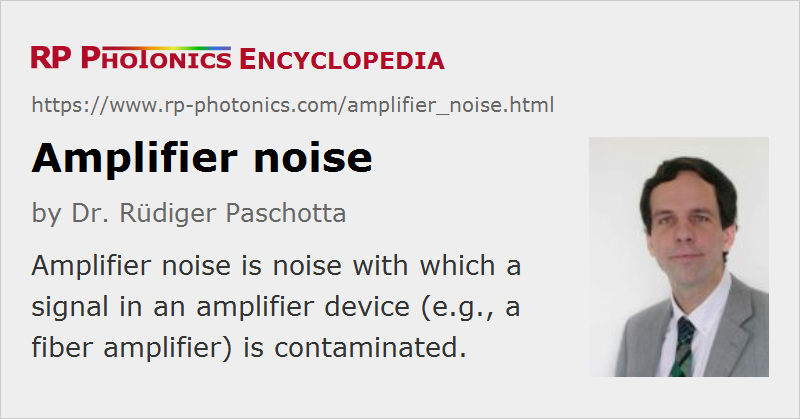

Amplifier Noise
Definition: noise introduced to a signal in an amplifier device
German: Verstärkerrauschen
Categories: optical amplifiers, lightwave communications
How to cite the article; suggest additional literature
Author: Dr. Rüdiger Paschotta
Apart from amplifying the input signal, every optical amplifier also adds some excess noise to the output. This is often quantified with the so-called noise figure.
For phase-insensitive amplifiers (i.e., those where the gain does not depend on the phase of the input), quantum optics dictates some minimum quantum noise level of the added noise. For example, for high gain applied to a shot-noise limited input (a coherent state), the output noise power of the intensity noise must be at least twice that of a hypothetical noiseless amplifier, i.e., the minimum noise figure is 2, corresponding to 3 dB. The phase noise is also increased.
Origins of Amplifier Noise
For laser amplifiers (based on stimulated emission, e.g. fiber amplifiers), the unavoidable excess noise can be regarded as arising from spontaneous emission of the gain medium into the amplified mode. For a four-level gain medium with a low-noise pump, the excess noise can approach the minimum quantum-mechanically allowed level. (Note that the gain medium acts as an energy reservoir, effectively damping the influence of high-frequency pump noise.) The use of quasi-three-level gain media leads to additional excess noise, because for a given gain the upper-state population (and thus the spontaneous emission) has to be higher to compensate for the signal reabsorption. The additional increase in noise in such situations can be quantified with a spontaneous emission factor, which decreases for increasing excitation levels.
Raman amplifiers behave similarly, if operated at not too high temperatures. They can have fairly low noise figures, if the propagation losses are small.
In a non-degenerate optical parametric amplifier, the excess noise comes from vacuum fluctuations entering the idler port, and possibly also from the pump wave. A degenerate parametric amplifier does not need to add excess noise (it has no idler!), but its amplification is phase-sensitive.
In addition to quantum noise, classical fluctuations of the pump source can also cause excess noise.
Questions and Comments from Users
Here you can submit questions and comments. As far as they get accepted by the author, they will appear above this paragraph together with the author’s answer. The author will decide on acceptance based on certain criteria. Essentially, the issue must be of sufficiently broad interest.
Please do not enter personal data here; we would otherwise delete it soon. (See also our privacy declaration.) If you wish to receive personal feedback or consultancy from the author, please contact him e.g. via e-mail.
By submitting the information, you give your consent to the potential publication of your inputs on our website according to our rules. (If you later retract your consent, we will delete those inputs.) As your inputs are first reviewed by the author, they may be published with some delay.
Bibliography
| [1] | H. Kogelnik and A. Yariv, “Considerations of noise and schemes for its reduction in laser amplifiers”, Proc. IEEE 52 (2), 165 (1964), doi:10.1109/PROC.1964.2805 |
| [2] | C. M. Caves, “Quantum limits on noise in linear amplifiers”, Phys. Rev. D 26 (8), 1817 (1982), doi:10.1103/PhysRevD.26.1817 |
| [3] | Y. Yamamoto, “AM and FM quantum noise in semiconductor lasers - Part I: Theoretical analysis”, IEEE J. Quantum Electron.19 (1), 34 (1983), doi:10.1109/JQE.1983.1071726 |
| [4] | R. Loudon, “Theory of noise accumulation in linear optical-amplifier chains”, IEEE J. Quantum Electron.21 (7), 766 (1985), doi:10.1109/JQE.1985.1072735 |
| [5] | C. R. Giles and E. Desurvire, “Propagation of signal and noise in concatenated erbium-doped fiber optical amplifiers”, IEEE J. Lightwave Technol. 9 (2), 147 (1991), doi:10.1109/50.65871 |
| [6] | E. Desurvire et al., “Characterization and modeling of amplified spontaneous emission in unsaturated erbium-doped fiber amplifiers”, IEEE Photon. Technol. Lett. 3 (2), 127 (1991), doi:10.1109/68.76863 |
See also: noise figure, spontaneous emission, quantum noise, amplified spontaneous emission, optical amplifiers, laser noise, The Photonics Spotlight 2006-07-16
and other articles in the categories optical amplifiers, lightwave communications
|  |
If you like this page, please share the link with your friends and colleagues, e.g. via social media:
These sharing buttons are implemented in a privacy-friendly way!